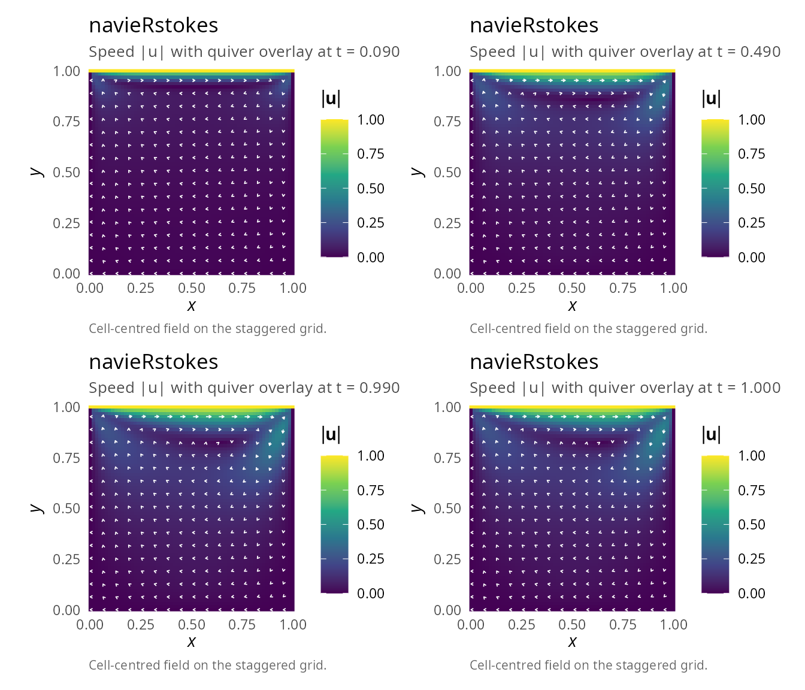
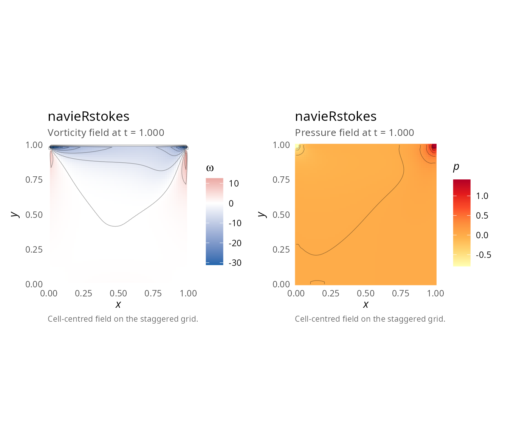
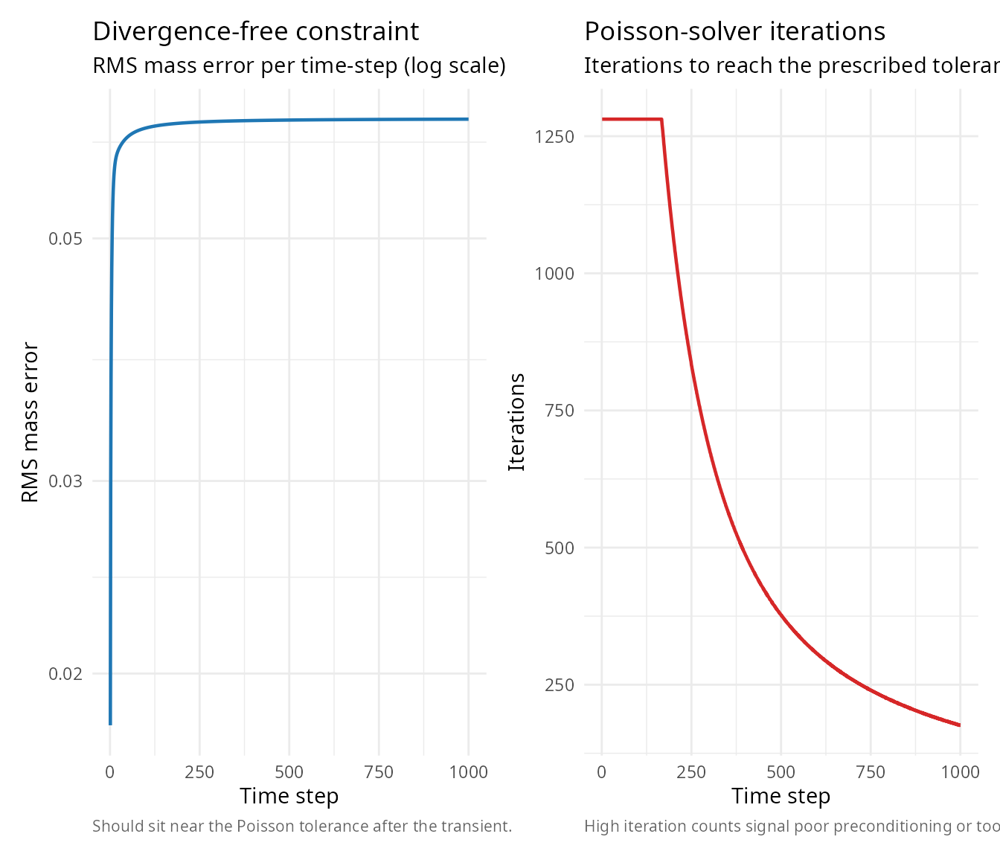
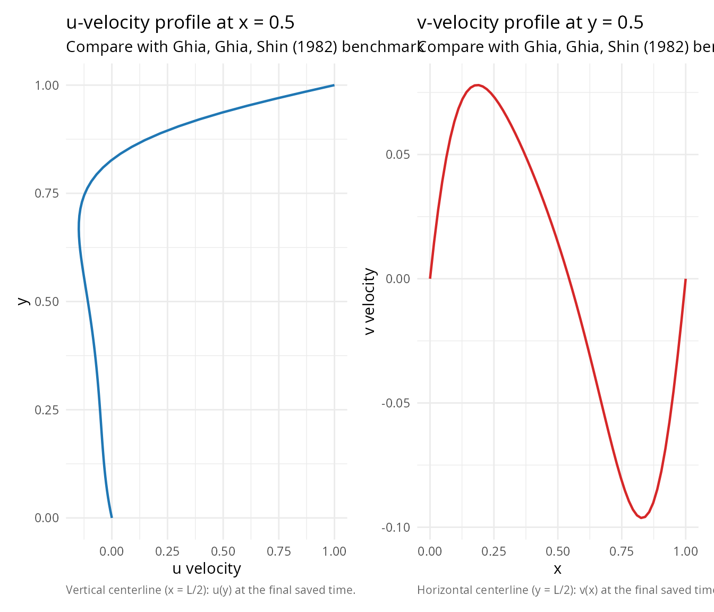

Lid-driven cavity flow
Pablo Almaraz, RElab
2026-04-27
Source:vignettes/lid-driven-cavity.Rmd
lid-driven-cavity.RmdOverview
The lid-driven cavity is one of the most famous benchmark problems in computational fluid dynamics [1],[2]. It consists of a square cavity with no-slip walls and a moving lid at the top.
Problem description
Geometry
- Square domain: \([0, 1] \times [0, 1]\)
- All walls have no-slip boundary conditions (velocity = 0)
- Top wall moves with constant velocity \(u = 1\)
Implementation
library(navieRstokes)
# Simulation parameters
nx <- 64
ny <- 64
lx <- 1.0
ly <- 1.0
nu <- 0.01 # Kinematic viscosity
Re <- lx / nu # Reynolds number = 100 (assumes U = 1, i.e., u_top = 1)
dt <- 0.001 # Time step
nt <- 1000 # Number of steps
save_interval <- 10
cat("Lid-driven cavity simulation\n")
#> Lid-driven cavity simulation
cat("Reynolds number:", Re, "\n")
#> Reynolds number: 100
cat("Grid:", nx, "x", ny, "\n")
#> Grid: 64 x 64
# Run simulation
result <- simulate_navier_stokes(
nx = nx,
ny = ny,
lx = lx,
ly = ly,
dt = dt,
nt = nt,
nu = nu,
rho = 1.0,
initial_condition = function(x, y) list(u = 0, v = 0),
boundary_condition = list(
type = "dirichlet",
values = list(
u_left = 0, u_right = 0, u_top = 1, u_bottom = 0,
v_left = 0, v_right = 0, v_top = 0, v_bottom = 0
)
),
# Using optimized defaults: jacobi solver, max_iter=1000, tolerance=1e-3
save_interval = save_interval
)
#> ¡ Starting Navier-Stokes simulation
#> Grid: 64 x 64, Reynolds number (approx): 100.00
#> Step 100/1000 | Mass error: 6.31e-02 | CFL: 0.06 | Pressure iter: 1281
#> Step 200/1000 | Mass error: 6.38e-02 | CFL: 0.06 | Pressure iter: 1064
#> Step 300/1000 | Mass error: 6.40e-02 | CFL: 0.06 | Pressure iter: 680
#> Step 400/1000 | Mass error: 6.41e-02 | CFL: 0.06 | Pressure iter: 488
#> Step 500/1000 | Mass error: 6.42e-02 | CFL: 0.06 | Pressure iter: 377
#> Step 600/1000 | Mass error: 6.42e-02 | CFL: 0.06 | Pressure iter: 307
#> Step 700/1000 | Mass error: 6.42e-02 | CFL: 0.06 | Pressure iter: 259
#> Step 800/1000 | Mass error: 6.42e-02 | CFL: 0.06 | Pressure iter: 224
#> Step 900/1000 | Mass error: 6.43e-02 | CFL: 0.06 | Pressure iter: 197
#> Step 1000/1000 | Mass error: 6.43e-02 | CFL: 0.06 | Pressure iter: 176
#> ✔ Simulation completed successfullyVisualization
Velocity field evolution
library(patchwork)
p1 <- plot(result, time_index = 10, plot_type = "velocity")
p2 <- plot(result, time_index = 50, plot_type = "velocity")
p3 <- plot(result, time_index = 100, plot_type = "velocity")
p4 <- plot(result, time_index = NULL, plot_type = "velocity")
(p1 | p2) / (p3 | p4)
Vorticity field
The vorticity \(\omega = \frac{\partial v}{\partial x} - \frac{\partial u}{\partial y}\) reveals the structure of vortices:
plot(result, plot_type = "vorticity") | plot(result, plot_type = "pressure")
#> Warning: The following aesthetics were dropped during statistical transformation: fill.
#> ℹ This can happen when ggplot fails to infer the correct grouping structure in
#> the data.
#> ℹ Did you forget to specify a `group` aesthetic or to convert a numerical
#> variable into a factor?
#> The following aesthetics were dropped during statistical transformation: fill.
#> ℹ This can happen when ggplot fails to infer the correct grouping structure in
#> the data.
#> ℹ Did you forget to specify a `group` aesthetic or to convert a numerical
#> variable into a factor?
Diagnostics
Mass conservation
library(ggplot2)
df_diag <- data.frame(
step = seq_along(result$diagnostics$mass_error),
mass = result$diagnostics$mass_error,
iter = result$diagnostics$pressure_iterations
)
p_mass <- ggplot(df_diag, aes(x = step, y = mass)) +
geom_line(linewidth = 0.8, colour = "#1F77B4") +
scale_y_log10() +
labs(title = "Divergence-free constraint",
subtitle = "RMS mass error per time-step (log scale)",
caption = "Should sit near the Poisson tolerance after the transient.",
x = "Time step", y = "RMS mass error") +
theme_minimal(base_size = 11) +
theme(plot.caption = element_text(color = "grey40", size = 8, hjust = 0))
p_iter <- ggplot(df_diag, aes(x = step, y = iter)) +
geom_line(linewidth = 0.8, colour = "#D62728") +
labs(title = "Poisson-solver iterations",
subtitle = "Iterations to reach the prescribed tolerance",
caption = "High iteration counts signal poor preconditioning or too-tight tolerance.",
x = "Time step", y = "Iterations") +
theme_minimal(base_size = 11) +
theme(plot.caption = element_text(color = "grey40", size = 8, hjust = 0))
p_mass | p_iter
cat("\nDiagnostics:\n")
#>
#> Diagnostics:
cat(" Mean mass error:", result$diagnostics$mean_mass_error, "\n")
#> Mean mass error: 0.06366493
cat(" Max mass error:", result$diagnostics$max_mass_error, "\n")
#> Max mass error: 0.06427261
cat(
" Mean pressure iterations:",
mean(result$diagnostics$pressure_iterations), "\n"
)
#> Mean pressure iterations: 562.508Centerline velocity profiles
Compare with benchmark data from Ghia et al. [1]:
# Extract velocity profiles along centerlines
final_idx <- dim(result$u)[3]
u_final <- result$u[, , final_idx]
v_final <- result$v[, , final_idx]
# Vertical centerline: u vs y at x = L/2 (Ghia et al. convention)
i_mid <- round(nx / 2)
u_centerline <- u_final[i_mid, ] # all y at fixed x-index i_mid; length ny
# Horizontal centerline: v vs x at y = L/2
j_mid <- round(ny / 2)
v_centerline <- v_final[, j_mid] # all x at fixed y-index j_mid; length nx
p_u <- ggplot(data.frame(u = u_centerline, y = result$y),
aes(x = u, y = y)) +
geom_path(linewidth = 0.8, colour = "#1F77B4") +
labs(title = "u-velocity profile at x = 0.5",
subtitle = "Compare with Ghia, Ghia, Shin (1982) benchmark",
caption = "Vertical centerline (x = L/2): u(y) at the final saved time.",
x = "u velocity", y = "y") +
theme_minimal(base_size = 11) +
theme(plot.caption = element_text(color = "grey40", size = 8, hjust = 0))
p_v <- ggplot(data.frame(x = result$x, v = v_centerline),
aes(x = x, y = v)) +
geom_line(linewidth = 0.8, colour = "#D62728") +
labs(title = "v-velocity profile at y = 0.5",
subtitle = "Compare with Ghia, Ghia, Shin (1982) benchmark",
caption = "Horizontal centerline (y = L/2): v(x) at the final saved time.",
x = "x", y = "v velocity") +
theme_minimal(base_size = 11) +
theme(plot.caption = element_text(color = "grey40", size = 8, hjust = 0))
p_u | p_v
Reynolds number effects
Different Reynolds numbers produce different flow structures [3]:
Re = 400
- Primary vortex moves toward center
- Small secondary vortices in bottom corners
- Longer convergence time
Re = 1000
- Stronger primary vortex
- Pronounced secondary vortices
- Possible tertiary vortices
To simulate higher Reynolds numbers, reduce nu and use
finer grids:
# Re = 400 example
result_Re400 <- simulate_navier_stokes(
nx = 128, ny = 128,
lx = 1.0, ly = 1.0,
dt = 0.0005, nt = 5000,
nu = 0.0025, # Re = 1/0.0025 = 400
initial_condition = function(x, y) list(u = 0, v = 0),
boundary_condition = list(
type = "dirichlet",
values = list(
u_left = 0, u_right = 0, u_top = 1, u_bottom = 0,
v_left = 0, v_right = 0, v_top = 0, v_bottom = 0
)
),
save_interval = 50
)
#> ¡ Starting Navier-Stokes simulation
#> Grid: 128 x 128, Reynolds number (approx): 400.00
#> Warning in simulate_navier_stokes(nx = 128, ny = 128, lx = 1, ly = 1, dt =
#> 5e-04, : ⚠ Poisson solver did not converge at step 19 (error = 5.23e-02,
#> tolerance = 1.00e-03)
#> Step 100/5000 | Mass error: 4.57e-02 | CFL: 0.06 | Pressure iter: 2561
#> Step 200/5000 | Mass error: 4.71e-02 | CFL: 0.06 | Pressure iter: 2561
#> Step 300/5000 | Mass error: 4.76e-02 | CFL: 0.06 | Pressure iter: 2294
#> Step 400/5000 | Mass error: 4.78e-02 | CFL: 0.06 | Pressure iter: 1633
#> Step 500/5000 | Mass error: 4.80e-02 | CFL: 0.06 | Pressure iter: 1259
#> Step 600/5000 | Mass error: 4.81e-02 | CFL: 0.06 | Pressure iter: 1025
#> Step 700/5000 | Mass error: 4.81e-02 | CFL: 0.06 | Pressure iter: 866
#> Step 800/5000 | Mass error: 4.82e-02 | CFL: 0.06 | Pressure iter: 752
#> Step 900/5000 | Mass error: 4.82e-02 | CFL: 0.06 | Pressure iter: 668
#> Step 1000/5000 | Mass error: 4.82e-02 | CFL: 0.06 | Pressure iter: 603
#> Step 1100/5000 | Mass error: 4.82e-02 | CFL: 0.06 | Pressure iter: 552
#> Step 1200/5000 | Mass error: 4.83e-02 | CFL: 0.06 | Pressure iter: 511
#> Step 1300/5000 | Mass error: 4.83e-02 | CFL: 0.06 | Pressure iter: 479
#> Step 1400/5000 | Mass error: 4.83e-02 | CFL: 0.06 | Pressure iter: 452
#> Step 1500/5000 | Mass error: 4.83e-02 | CFL: 0.06 | Pressure iter: 429
#> Step 1600/5000 | Mass error: 4.83e-02 | CFL: 0.06 | Pressure iter: 411
#> Step 1700/5000 | Mass error: 4.83e-02 | CFL: 0.06 | Pressure iter: 395
#> Step 1800/5000 | Mass error: 4.83e-02 | CFL: 0.06 | Pressure iter: 380
#> Step 1900/5000 | Mass error: 4.83e-02 | CFL: 0.06 | Pressure iter: 368
#> Step 2000/5000 | Mass error: 4.83e-02 | CFL: 0.06 | Pressure iter: 356
#> Step 2100/5000 | Mass error: 4.83e-02 | CFL: 0.06 | Pressure iter: 346
#> Step 2200/5000 | Mass error: 4.83e-02 | CFL: 0.06 | Pressure iter: 337
#> Step 2300/5000 | Mass error: 4.83e-02 | CFL: 0.06 | Pressure iter: 328
#> Step 2400/5000 | Mass error: 4.83e-02 | CFL: 0.06 | Pressure iter: 319
#> Step 2500/5000 | Mass error: 4.83e-02 | CFL: 0.06 | Pressure iter: 312
#> Step 2600/5000 | Mass error: 4.83e-02 | CFL: 0.06 | Pressure iter: 304
#> Step 2700/5000 | Mass error: 4.83e-02 | CFL: 0.06 | Pressure iter: 298
#> Step 2800/5000 | Mass error: 4.83e-02 | CFL: 0.06 | Pressure iter: 290
#> Step 2900/5000 | Mass error: 4.83e-02 | CFL: 0.06 | Pressure iter: 284
#> Step 3000/5000 | Mass error: 4.83e-02 | CFL: 0.06 | Pressure iter: 278
#> Step 3100/5000 | Mass error: 4.83e-02 | CFL: 0.06 | Pressure iter: 272
#> Step 3200/5000 | Mass error: 4.83e-02 | CFL: 0.06 | Pressure iter: 266
#> Step 3300/5000 | Mass error: 4.83e-02 | CFL: 0.06 | Pressure iter: 261
#> Step 3400/5000 | Mass error: 4.83e-02 | CFL: 0.06 | Pressure iter: 255
#> Step 3500/5000 | Mass error: 4.83e-02 | CFL: 0.06 | Pressure iter: 250
#> Step 3600/5000 | Mass error: 4.83e-02 | CFL: 0.06 | Pressure iter: 246
#> Step 3700/5000 | Mass error: 4.83e-02 | CFL: 0.06 | Pressure iter: 242
#> Step 3800/5000 | Mass error: 4.83e-02 | CFL: 0.06 | Pressure iter: 237
#> Step 3900/5000 | Mass error: 4.83e-02 | CFL: 0.06 | Pressure iter: 233
#> Step 4000/5000 | Mass error: 4.83e-02 | CFL: 0.06 | Pressure iter: 229
#> Step 4100/5000 | Mass error: 4.83e-02 | CFL: 0.06 | Pressure iter: 224
#> Step 4200/5000 | Mass error: 4.83e-02 | CFL: 0.06 | Pressure iter: 222
#> Step 4300/5000 | Mass error: 4.83e-02 | CFL: 0.06 | Pressure iter: 218
#> Step 4400/5000 | Mass error: 4.83e-02 | CFL: 0.06 | Pressure iter: 215
#> Step 4500/5000 | Mass error: 4.83e-02 | CFL: 0.06 | Pressure iter: 212
#> Step 4600/5000 | Mass error: 4.83e-02 | CFL: 0.06 | Pressure iter: 208
#> Step 4700/5000 | Mass error: 4.83e-02 | CFL: 0.06 | Pressure iter: 206
#> Step 4800/5000 | Mass error: 4.83e-02 | CFL: 0.06 | Pressure iter: 202
#> Step 4900/5000 | Mass error: 4.83e-02 | CFL: 0.06 | Pressure iter: 200
#> Step 5000/5000 | Mass error: 4.83e-02 | CFL: 0.06 | Pressure iter: 197
#> ✔ Simulation completed successfullyVortex center location
Find the primary vortex center:
# Get final velocity field
final_idx <- dim(result$u)[3]
u_final <- result$u[, , final_idx]
v_final <- result$v[, , final_idx]
# Calculate speed
speed <- sqrt(u_final^2 + v_final^2)
# Find vortex center (minimum speed in interior)
interior_speed <- speed[10:(nx - 10), 10:(ny - 10)]
min_idx <- which(interior_speed == min(interior_speed), arr.ind = TRUE)
vortex_i <- min_idx[1] + 9
vortex_j <- min_idx[2] + 9
cat("Vortex center location:\n")
#> Vortex center location:
cat(" x =", result$x[vortex_i], "\n")
#> x = 0.6507937
cat(" y =", result$y[vortex_j], "\n")
#> y = 0.8253968
# Benchmark value at Re=100: approximately (0.62, 0.74)Performance notes
With optimized Jacobi solver (v0.1.1+):
- 64×64 grid: ~0.4 seconds for 1000 time steps
- 128×128 grid: ~2-3 seconds for 1000 time steps
- 256×256 grid: ~30-60 seconds for 1000 time steps
Rcpp-optimized Jacobi solver provides approximately 500x speedup compared to the original SOR implementation with convergence issues.
References
[1] Ghia, U., Ghia, K. N., & Shin, C. T. (1982). High-Re solutions for incompressible flow using the Navier-Stokes equations and a multigrid method. Journal of Computational Physics, 48(3), 387-411. DOI: 10.1016/0021-9991(82)90058-4
[2] Botella, O., & Peyret, R. (1998). Benchmark spectral results on the lid-driven cavity flow. Computers & Fluids, 27(4), 421-433. DOI: 10.1016/S0045-7930(98)00002-4
[3] Erturk, E., Corke, T. C., & Gokcol, C. (2005). Numerical solutions of 2-D steady incompressible driven cavity flow at high Reynolds numbers. International Journal for Numerical Methods in Fluids, 48(7), 747-774. DOI: 10.1002/fld.953